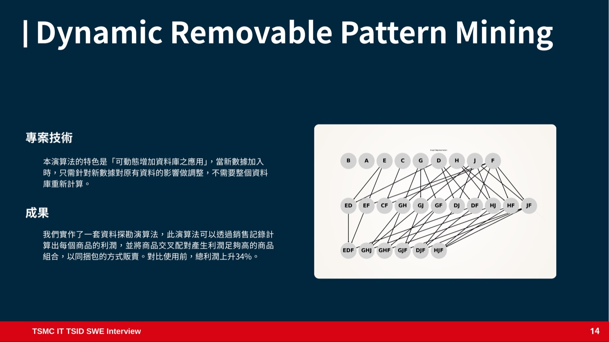

02 · Selected Work · 2024 — Dynamic Removable Pattern Mining
增量資料庫可擦除樣式探勘
零售商想知道「哪些商品利潤太低、可以跟其他商品捆在一起賣」，但交易資料庫每天都在增長。 這個大學專題實作了一套可動態增加資料庫應用的樣式探勘演算法： 新的銷售記錄進來時，只需要針對新數據對原有結果的影響做調整， 不必把整個資料庫重新計算一次。

要解決的問題
零售商希望找出「單獨賣利潤很低、但如果跟某些商品一起賣就有利可圖」的商品組合—— 這在資料探勘裡屬於可擦除樣式探勘（Removable / Erasable Pattern Mining）的範疇： 反過來找出利潤貢獻偏低、值得整併或搭配銷售的商品集合， 幫零售商決定哪些商品該捆綁販賣、哪些該優先下架。
真實的零售交易資料是持續增量的，每天都有新的銷售記錄進來。 如果每次分析都要把整個資料庫重新掃描、重新計算一次，成本會隨資料量不斷疊加。 這個專案要解決的正是這件事：讓樣式探勘的結果可以隨新資料到來動態更新， 而不是每次都从零開始。
演算法設計：可動態增加資料庫的應用
核心特色是「可動態增加資料庫之應用」：當新的銷售資料加入時， 演算法只需要針對新數據對原有資料的影響做調整， 不需要把整個資料庫重新計算一遍。候選商品組合以類似 lattice（格）的結構組織—— 從單一商品開始，逐步往上組成兩兩配對、三個一組的組合， 每一層都只需要根據下一層已經算好的結果延伸，而不是每次都重新窮舉。
成果
我們實作了一套資料探勘演算法，能透過銷售記錄計算出每個商品的利潤， 並將商品交叉配對，找出利潤足夠高的商品組合，以同捆包的方式販賣。
學到的事：增量演算法真正的難點不在「怎麼算」，而在「怎麼確保只更新受影響的部分還能維持正確性」—— 商品組合的候選集合會隨新資料擴張或收斂，資料結構如果設計得不好， 「增量」就只是名義上的，實際上還是得把很多東西重算一次。